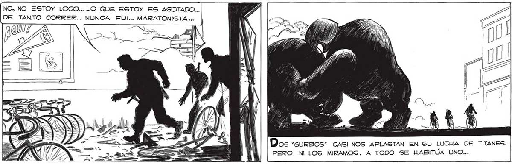
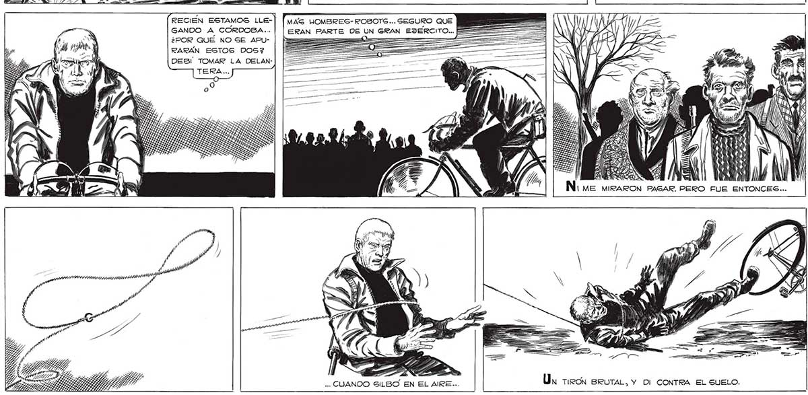

290 fo, No ESTOY LOCO... LO QUE ESTOY ES AGOTADO... DE TANTO CORRER... NUNCA FUI... MARATONISTA ... == Aa EN € EN -¿D YE 44% Dos “GURBOS” CASI NOS APLASTAN EN SU LUCHA DE TITANES. Tuvimos QUE PEDALEAR EN FILA INDIA. PERO NI LOGS MIRAMOG. A TODO SE HABITÚA UNO... CADA VEZ ERA MAG DIFICIL SEGUIR. ir srdl A a A — ZAS RECIEN ESTAMOS LLE-| [yx HOMBRES- ROBOTS... SEGURO QUE EEUU GANDO A CORDOBA... | | ERAN PARTE DE UN GRAN EJERCITO... ==] ¿POR QUÉ NO SE APU- | === 0 = = RARÁN ESTOS DOS? === DES! TOMAR LA DELAN|ME MIRARON PAGAR. PERO FUE ENTONCES... AO AR Mi .. CUANDO SILBO EN EL AIRE... Un TIRON SRUTAL, Y DI CONTRA EL SUELO. sa LIZ 2% LR

